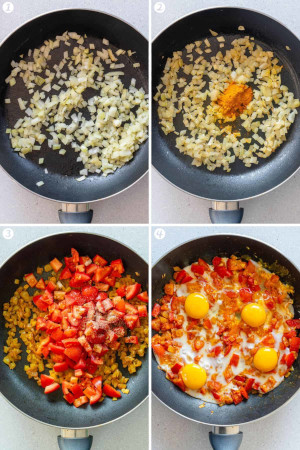

Persian Omlette

Ingredients (for 2 people)
- 3 cloves of garlic, tomato paste, 1⁄2 tsp turmeric powder. 1⁄2 tsp black pepper
- diced tomato
- 2 eggs, salt
Optional
Onion, Paprika, Oregano, coriander, chilli flakes, cumin, basil
How to make it
- In a pot, saute garlic, add tomato paste, trumeric, and pepper
- Add tomato and cover for 2 minutes.
- Add eggs and salt